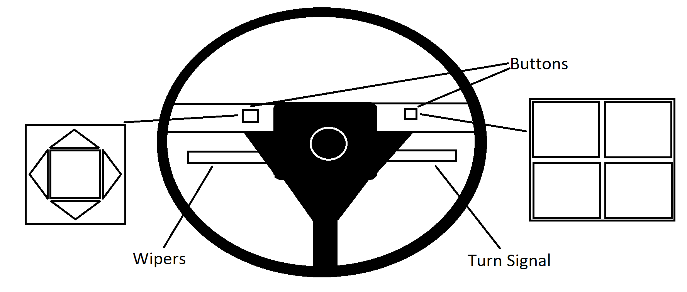
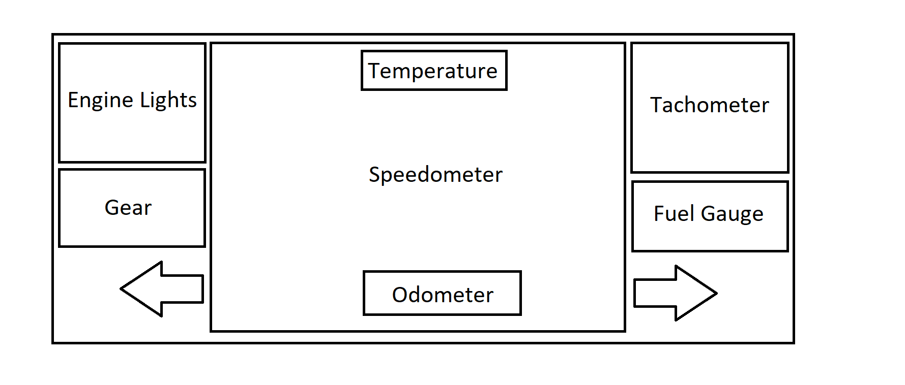
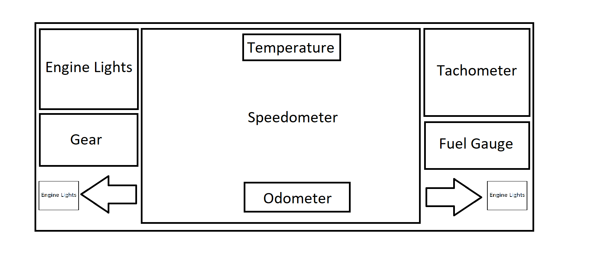
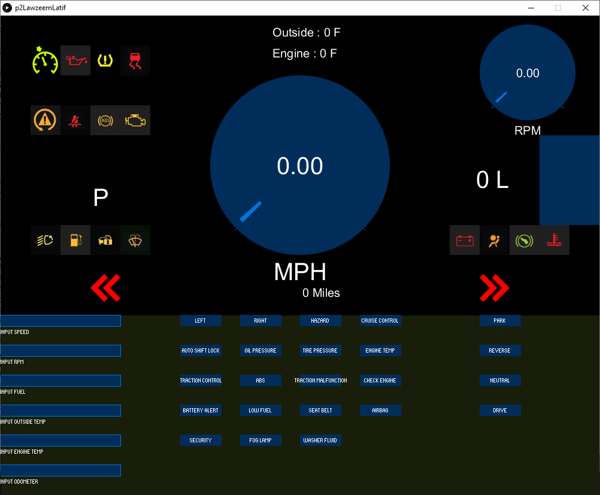

Part 2
Common Features of Car Dashboard
Check the speed of the car.
Check the status of the car with various check engine, emergency lights, tire pressure.
Check if everything is ready before driving, like doors closed, seatbelts.
Rare Uses of Car Dashboard
Check outside temperature.
Miles traveled with the odometer. Only used while servicing or when thinking of servicing.
Check the time.
Controls used to interact with the dashboard
Little knobs on the dashboard.
Buttons on the steering wheel.
Common mistakes with current design
Confusing or missing labels on the controls.
Usually no way to reset changes.
Sketch of suggested Control Interface

Justification for design
The turn signal and the wipers are in the usual place.
Having 2 blocks of buttons on the steering wheel accessible by the drivers thumbs make the buttons easy to find.
The driver will not have to fiddle too much and can easily press any button needed.
Part 3
Proposed Dashboard Design

This design keeps things organized.
The speedometer is the center of attention. Everything else is off to its side.
Updated propsal for design
After some prototyping, the original design had too many lights in the top left "Engine Light" box.
This made the dashoard feel too cluttered so I moved some lights to next to the Left and Right Indicator.
This makes use of previously unused space while also giving some breathing room so the driver is not overwhelmed by all the signals.

Final Dashboard Design

Demo gif

Video Demo